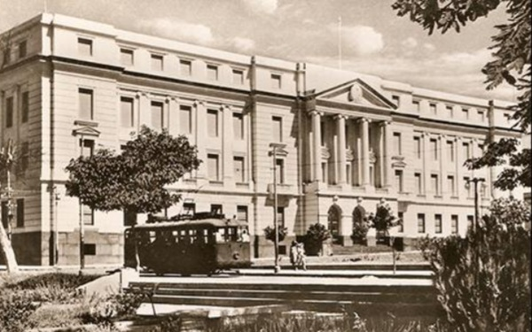

Origin XX century. Year 1942-1944
Project designer Sanchez Lagos. Luis M. de la Torre, F. Corbellani, R. Cardini
Nationality of the Designer Argentines and Italians
Builder Comm. Argentina Acevedo y Shaw S.A.-Comp .Americana de Const. Nationality of the Builder Argentina
Historical aspects
The National Development Bank was created by Decree Law No. 281/1961. It is an autarchic entity with legal status, whose assets are considered legally separate from State assets. The duration of the Bank will be for an indefinite period of time and the obligations it contracts are guaranteed by the Paraguayan State. This is what Article 1 of the Law of its creation says.
It previously had several names:
National Bank of Paraguay (1874)
Bank of Paraguay(1878)
National Bank of Paraguay S.A. (1881)
National Bank of Paraguay (1883)
BANCO AGRÍCOLA DEL PARAGUAY, created by Law of September 24, 1887 and incorporated into the Bank of Paraguay in 1947 by Decree No. 23,681 of December 23, 1947, ordering the incorporation of the Agricultural Bank of Paraguay into the Bank of Paraguay -article 1°- and it is established that the assets and liabilities of the Banco Agrícola del Paraguay be transferred to the Banco del Paraguay –article 2°-.
BANK OF THE REPUBLIC OF PARAGUAY, created in 1936 by Decree-Law No. 11 of February 22, 1936, which in turn had replaced the old OFFICE OF EXCHANGE created in 1916.
BANCO DEL PARAGUAY, created in 1944 by Decree-Law No. 5130 of September 8, 1944. The Bank of Paraguay replaced the Bank of the Republic of Paraguay and later absorbed the Agricultural Bank of Paraguay.
National Development Bank (1961 to today)
The building project was carried out by the professional architects Luis María de la Torre, Ferruccio Corbellani - Roberto Cardini and the Argentine construction company Acevedo y Shaw S.A. and American Public Works Company. All the works were supervised by the Engineer Pascual A. Gagneten of Argentine nationality and by the Architect Francisco Canese of Paraguayan nationality.
The construction of the work began in 1942 and ended in 1944, being inaugurated on December 27, 1945. It had a delay with respect to the original execution plan, which could not be fulfilled due to difficulties in the provision of some construction materials. construction due to World War II.
The style of the building is neoclassical and monumentalist. In its architectural projection, the idea of making a closed building that provides a sense of security and protection prevailed, adjusting to the concept of a bank that existed at the time. The columns, topped with Doric capitals, on which the front of the building rests give the impression of solidity and the powerful backing of a firmly established institution, such as a bank should be. It has a large operating room, surrounded by translucent windows.
Many critics see in it a resemblance to the Buckingham Palace building but on a smaller scale. Undoubtedly there is some inspiration in the London palace, in its volumetry, the central frontispiece, the levels, the symmetry, the main body and the lateral projections. Although in the details they have little in common.
It was the first state building of this magnitude built after the War of 70. Before that, in the private sector there were some important constructions, such as the Palacio Alegre, current headquarters of the Ministry of Finance and the German Pharmacy of Chile and Estrella, all works neoclassical.
According to Resolution No. 89/99 dated November 14, 1999, the General Directorate of Cultural Assets, dependent on the Ministry of Education and Culture declared the building as Part of the Historical Architectural and Natural Heritage and Part of the Cultural Heritage of the Republic and it is protected by Law 946/82 on the Protection of Cultural Assets.
Formal Aspects: From the point of view of applied technology: It is observed in the main facade of the building, the neoclassical style with the compositional lines of Base-Body and Crowning, marking trends in the Asuncion urban landscape. This new building pattern is the result of an architecture adopted in our country at the beginning of the 20th century.
Spatial and Technical Constructive Aspects: Typology U-shaped architectural plan Description The building is located on a large plot of land, raised with respect to the street, and on the municipal boundary or sidewalk. According to data provided by the Technical Construction Department of said entity: The building is made up of a main body and three upper floors and a sub-floor, whose fronts, main and sides measure 75 and 16 m. respectively, the average total height above sidewalk level is 21m. The covered area of the building is 7000 m2.
For its construction, reinforced concrete was used in the foundations and structure, ceramic bricks in masonry, granite tile floors and in the toilets common tiles were used. The doors inside the offices are made of wood. The windows are type metal shutters.
On the main façade, the subdivision of the bodies of the building can be seen, different and organic from each other, standing out clearly in their surroundings. The main access for the public is defined by three large sliding bronze doors with a semicircular arch, hierarchized by an important staircase. Its wide open spaces (designed by the same construction company and equipped with careful landscaping) in addition to providing a beautiful perspective to the building, were conceived as an extension of the large open space that constitutes the four large squares.
The building is isolated from neighboring buildings by spacious gardens. Currently, its offices occupy the neighboring houses that were acquired by the Bank and were refurbished inside without altering their facades. Example: House located on Cerro Corá street, corner of Yegros.
Degree of Valuation (According to Municipal Ordinance JM 35/96) Architectural Value; Environmental value.
Comments: The degree of valuation is consigned by the Historical Center Office of the Municipality of Asunción. It is part of the National Heritage by Law 5621/16, Resolution No. 89/1999 of the General Directorate of Cultural Assets/VMC/MEC. The Municipality of Asunción has cataloged it through HJM Ordinances No. 28/96 and 35/96.
Observations: The emblematic building located in the center of the city of Asunción, was conceived with an evocation of neoclassical style, which is manifested in the adequate combination of the architectural elements that give the work sobriety and elegance without ostentation, qualities in accordance to the character of the "main bank of the Republic".
Bibliography
Bibliography www.bnf.com.gov.
www.asunciondeantano.py
National Secretariat of Culture (SNC): General Directorate of Cultural Heritage -
Heritage Registry Directorate - Cultural Heritage Registry Department.
Municipality of Asunción- General Directorate of Urban Development-Directorate of Planning U.-Department of Cultural Heritage
Linking with other tabs
Link National Identification Card of the Immovable Cultural Good-Heritage Registry Directorate- General Directorate of Cultural Heritage of the National Secretariat of Culture. (CNS)
Building Inventory Sheet- Year 1990- Historical Center Office- Municipality of Asunción.
Work team
Cataloger Arch. Mirtha Ibarra C.
Collaborators Arch. Clarisse Insfrán E.
Other Collaborators Func. Gustavo Barrios Álvarez
Func. Humberto Battioni
Component entity Heritage Registry Directorate
Data collection date 05/01/2018
Operator Mirtha Ibarra
Registration date 06/22/2020